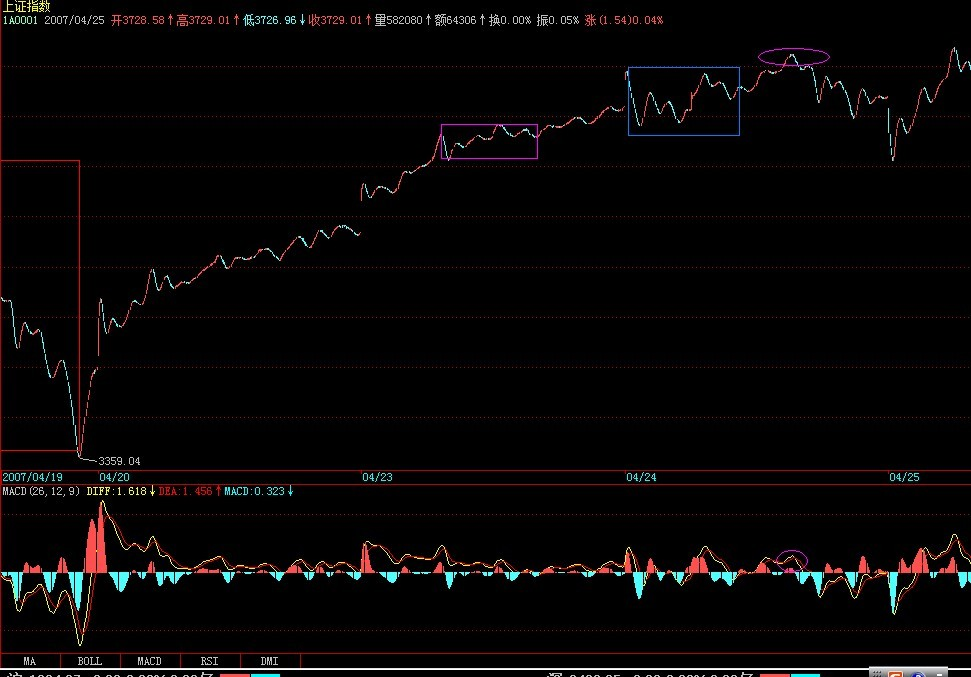
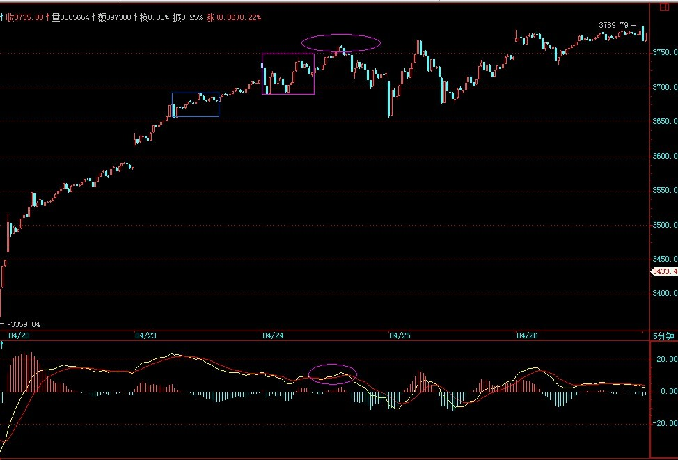
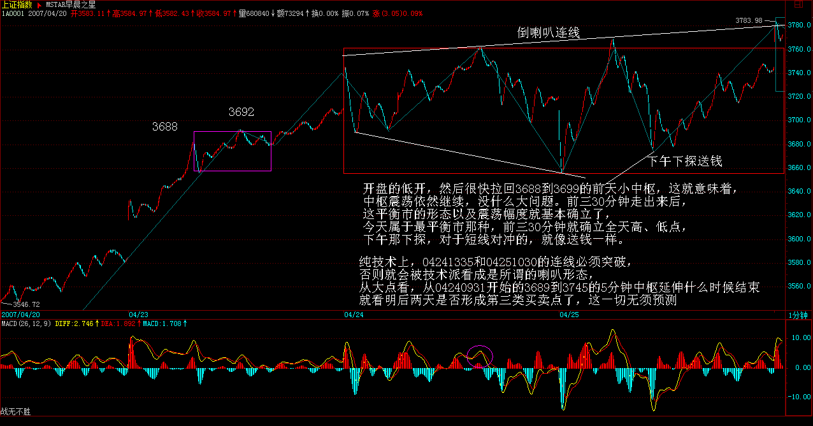

|
 |
教你炒股票48：暴跌，牛市行情的一夜情
(2007-04-24
08:52:02)
前面在每天的行情分析中，曾不客气地说到，对于空头日夜盼望的暴跌，其实永远与空头无关，因为真跌了，空头就只会口头上快感一下，心理上满足一下，但人的思维惯性，使得空头永远没机会在他们满意的地方获得满意的筹码。暴跌，对于牛市行情来说，就如同一夜情，猛烈而刺激，但实质上，一夜情就是一夜情，419后，该干什么还是什么。
就如同性能量的积聚，牛市调整能力的积聚，也需要宣泄。这种宣泄，与熊市最大的不同，就是419化。419，总是猛烈而疯狂，否则就没必要419了。牛市中的调整也一样，来就狂风暴月，这和熊市中的大反弹是一样的。最出名的熊市大反弹，大概就是停国债期货那次，三天，指数从550不到翻上920上(娇：1995年5月），结果，后面依然继续下跌回来。而牛市中的暴跌，最出名的算是96年12月那次，由于政策打击，连续跌停下来，1250点上几天跌到850点附近，结果依然继续上涨。所有真正的大顶，都是反复冲击出来的，有足够的时间让你去反应判断，那种V型顶，在大型走势中基本不会构成真正的顶部，就如同一夜情最后天长地久的机会基本为0。所以，那些天天希望暴跌的人，就如同天天期望一夜情的人一样，都有着滥交的潜意识倾向，滥交之人，最终都会给废掉，不会有好结果的。
有一种对风险的错误观点，仿佛股价、市赢率高了才风险大，股价、市赢率低了就风险小了，却不知道股价、市赢率都是些变动的因数，并没有任何绝对的意义。本ID曾多次强调，风险对于市场是绝对的，任何时候都在风险之中，如果你对本ID的理论能有所理解，那么，不仅能让风险在操作级别的绝对控制之中，而且还能利用风险达到降低成本。无风险是可以创造出来的，0成本就是绝对的无风险。如果不理解，那么最简单均线系统就可以控制住风险。
但站在社会财富增长的绝对性上，最大的风险就是你的财富增长赶不上社会平均财富的增长，站在资本市场这个子系统，道理是一样的。因此，在一个大牛市中，筹码的积累甚至更重要。一个大的上涨，3元有1万股，到4元只有1千股，后来到了30，一股没有，这就是最大的风险，因为市场的上涨并没有为你制造应该的总体利润，你的筹码丧失了，没有筹码，在市场中就没有赢利的准入证，在没有做空机制的市场中，做空最后还是为了做多，除非你永远退出市场，特别在牛市行情依然的情况下，这点更重要了。没有筹码，用嘴是赢利不了的。
最好的情况，当然就是前面所说的，在成本为0前不断降低成本，在成本为0后不断挣筹码，这样股价越上涨，你的筹码越多，你的真正市值才会越来越大。有人问本ID，你以后怎么出货，本ID反问，为什么要出货？每一次震荡，都成了本ID降低成本、增加筹码的机会，知道最高的境界是什么吗？就是等大牛市真正结束那天，你拥有股票的数量最多而成本是0，然后，（后面删去419字）。市场从来不是慈善场所，要战胜市场，必须有正确的大思路与总体的方法。
正确去对待震荡、调整，显然，在大盘中短线能量耗尽后，大盘会出现大规模的调整，如果说227、419都是在日线上一夜情，那么在周线上、月线上、季线上、甚至年线上出现一夜情的可能性在这长达至少20年以上的大牛市中，都是绝对存在的。但这决不是空头用嘴欢呼的借口，而是真正操作者减低成本、增加筹码的大好时机。当然，操作的精确度是一个技术问题，技术高的，就能把成本降更低，筹码增得更多，这是绝对正常的事情，技术高的就该有更好的收益，这是天经地义的。但精确度是可以用市场磨练来达到的，而思路、方法的错误，则是不可救药的，这才是问题的根源。
站在纯技术的角度，把握一夜情的级别很重要。一个日线上的一夜情与一个年线上的一夜情，显然力度上不一样。在这次从2005年中开始的大牛市行情中，至今为止，本质上，在周线上都没有出现过一夜情的暴跌，周线上两次大的调整，周跌幅都是7%，还赶不上227的日一夜情，月线上更是连一次真正有意义的下跌都没有。但为什么这么多人，天天依然如惊弓之鸟一般？
如果你把握不住日线的一夜情，证明你的技术程度达不到把握日线一夜情的程度，那么就去把握周线、月线的，那对技术精确的要求要低。给自己安排一些力所能及的活动，一夜情也是有级别的，能否在各级别的一夜情中游刃有余，是对你技术把握度的考验。
事情往往相通，无论技术还是其他，精度都是干出来的。今晚，是否也要419一把？
-----------------------------------------------------------------
每日解盘(2007-04-24 15:23:54)
缠中说禅：
2007-04-24 15:23:54
今天大盘在昨天的一个小中枢3688到3692受到支持，下午的5分钟盘整顶背驰，应该不难把握。从这就知道，每天之间的当日走势，还是有一定技术意义的。今天，一个平衡市，收得一般，由于5日线明天就上来了，所以关键还是5日线，站稳就寻机上攻，否则就要受到昨天缺口的吸引。今天这种平衡市却是巨量的走势，关键就是要有效向上突破今天的中枢，否则大幅震荡不可避免。今后两天走势十分关键。睁大眼睛看好明后两天的走势，下面3688到3692小中枢不能有效被跌破。


目前就是前面本ID所说，二线拉开空间，三线补上来的走势，但这种走势，必须有一个转换，使得成分股能重新启动，否则也是震荡难免。目前走势，不要随意换股，该换的早该换了，如果是短线的，就要注意今天中枢最后的演化方向来决定进出，中线的就无所谓了，看5周均线。 每日解盘(2007-04-25 15:25:17)
就算你对本ID的理论只有幼儿园水平，那今天的走势都一定难不到你。一开盘的低开，然后很快拉回3688到3699的前天小中枢，这就意味着，中枢震荡依然继续，没什么大问题。前三30分钟走出来后，这平衡市的形态以及震荡幅度就基本确立了，今天属于最平衡市那种，前三30分钟就确立全天高、低点，下午那下探，对于短线对冲的，就像送钱一样。

板块方面，昨天已经说了，今天需要一个板块的切换，成分股要重新走起来，这切换还可以，毕竟基金也要面子，51前也需要一个好的市值，做人不能打击面太宽了。 == 48课缠师的回帖整理
(2010-01-30 08:12:48)
缠中说禅：
2007-04-24 08:55:19
本文不针对任何具体日子走势，当日走势分析3点收盘给出。
缠中说禅：
2007-04-24 21:15:49
[匿名] 技术学习ing
缠中说禅：
2007-04-24 21:22:01
[匿名] 白玉兰
2007-04-24 21:14:21
缠中说禅：
2007-04-24 21:22:56
[匿名] 上课啦我举手
缠中说禅：
2007-04-24 21:24:47
[匿名] 新浪网友
缠中说禅：
2007-04-24 21:29:24
[匿名] 缠心雕龙 47课原文：“你可以很明确地知道，在跌破1030到1330的中枢后，首先会有一个小的第三类卖点，小的第三类卖点后，有两种演化的可能……一个是形成下跌，至少再有两段向下……对于一个跌破中枢的下跌来说，第三类卖点后再来两波就可以随时完美。这个完美，由于该下跌是1分钟以下级别的，因此从该下跌的细部，是找不到根据1分钟背弛去确认的买点的，只可能根据分笔背驰。”
缠中说禅：
2007-04-24 21:33:03
[匿名] 首钢股份
缠中说禅：
2007-04-24 21:46:47
[匿名] 小凤 |
|
|
|